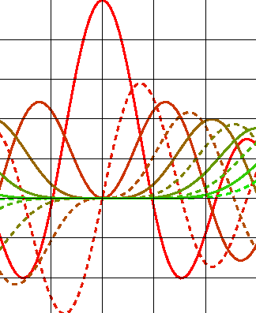

Chaco2
A Brief History, Progress Update, and Future Directions
Peter Wang
Enthought, Inc.
What is Chaco?
Chaco is a plotting application toolkit for Python. You use it to build
stand-alone plotting applications, or embed it inside any application that needs
to visualize numerical data.
Sample plotting applications:
- batch plotting of data
- interactive data inspector
- realtime data acquisition and plotting
- plot/graph constructor
More plotting applications
It's not all scientific-y stuff!
- sound waveform editor
- graphic equalizer
- graphical stock ticker
- Google Maps
Any time you want to view numerical information in a structured way, you
are doing plotting.
What makes Chaco special?
- Chaco has an architecture that facilitates viewing interrelated data
- Chaco is designed from the ground up to be interactive (user interaction
and data inspection)
That's enough!
- many, many plotting apps out there
- not many that are real "toolkits" (jfreechart, INT widgets)
- fewer are designed for really interactive use
- even fewer are free
- none (that I'm aware of) in Python
Most of the hard math problems are solved or patented: contouring, label placement, fast 2d graphics routines.
What remains is the software challenge. A good toolkit provides modular pieces that play well together. They must map onto the problem domain (plotting) in a coherent way.
A brief history
- Originally developed a few years ago by Dave Morrill and others
- Remained relatively dormant for a couple of years
- Now undergoing re-architecting and rewrite: Chaco2
Architecture
- Data objects: DataSource, DataRange, Mapper
- Plotting side: Mapper, Renderer, Axis, Grid
- Containers & Frames
Demos
The Near and Far Future
- Port renderers from old Chaco
- polar
- command-line plotting (matlab-style interface)
- 3D
- 4D!
How to get it
http://code.enthought.com/chaco
Mailing lists: scipy-chaco@scipy.org, enthought-dev@enthought.com
Get Enthon! http://code.enthought.com/enthon